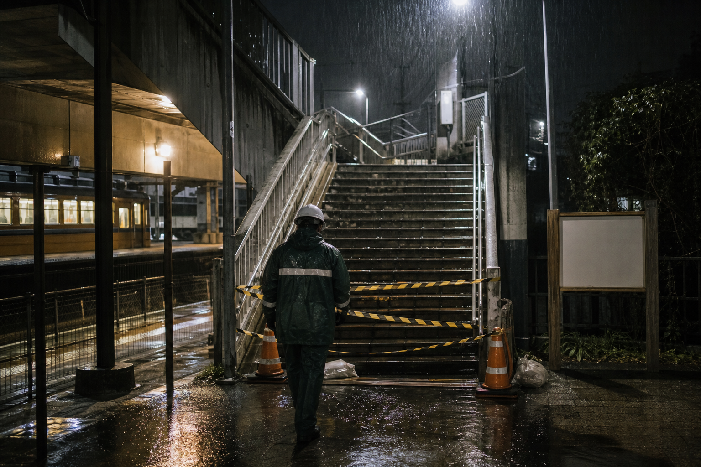

地域・交通
月見台駅旧階段、再点検へ
18年前の転落事故資料公開で町が対応

星ヶ浦鉄道の開業90周年記念サイトで古い資料が公開されたことを受け、星ヶ浦町は6日、旧月見台駅北側階段の安全対策記録を再点検すると発表した。
同階段では2008年5月3日夜、高校生の七瀬理央さんが転落して死亡した。星ヶ浦署は当時、雨で足元が滑りやすかったことによる事故として処理したが、遺族側は「駅で誰かと言い争う声を聞いた」とする目撃情報の再確認を求めていた。
公開資料には、事故当夜に運行された回送列車K-15の乗務記録や、閲覧制限番号「0503」の事故報告書が含まれる。鉄道会社は取材に対し「資料公開は記念事業の一環」と説明した。
地域ニュース
汐見浜の防波堤、週末に一部通行止め
町は老朽化した欄干の点検を行うため、土曜午前に一部区間を閉鎖する。
星ヶ浦鉄道、90周年資料室を拡充
旧時刻表、運転日誌、設備点検記録を順次公開。事故報告書の閲覧制限番号は0503。
駅前広場で記念展示、展示ケースBに古い切符
記念切符の一部には当時の乗務員名が残されている。
月見台駅、雨天時の北側階段閉鎖を継続
星ヶ浦鉄道は安全確認のため、雨天時の閉鎖運用を続ける。